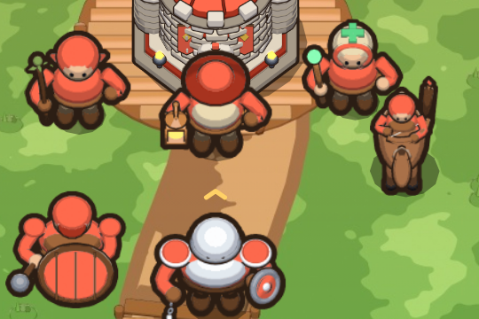
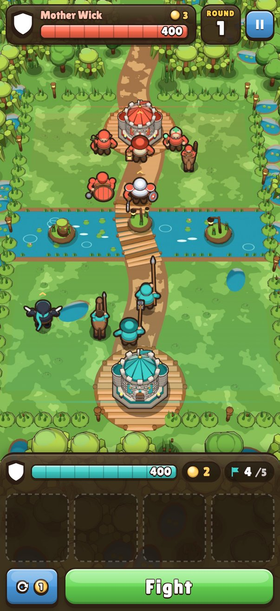

Battle board: keep full 3x resolution, or cap it at 2x?
This is the Act 8 boss board on an iPhone 17 Pro-size screen (402x874 points, 3x display). Only the battle canvas changes. The HUD, cards and text are DOM and stay sharp either way. On a quiet Mac the simulator runs a 24-unit battle at 56.6-57.3 fps at 3x, which passes the 55 fps bar. When the Mac is busy (load average 14-19), 3x dropped to 47-54 fps and a 2x cap held 56-58 fps. 2x draws 56% fewer pixels per frame. Real iPhones don't share a CPU with Blender renders and other agents, so 3x is very likely fine on a device.
| Simulator, Mother Wick board, same hour, interleaved | Run 1 | Run 2 | Run 3 |
|---|---|---|---|
| 3x (1206x2622 canvas, shipping today) | 54.1 fps | 47.3 fps | 54.5 fps |
| 2x cap (804x1748 canvas) | 56.3 fps | 57.0 fps | 57.9 fps |
Tap to flip the same crop at phone pixel size. Softening shows on outlines and spear tips.
3x
Close-up, 1:1 device pixels

Whole screen
